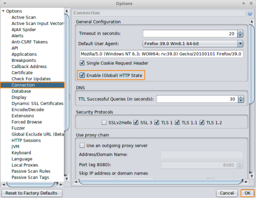
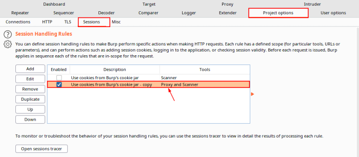
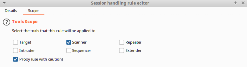

2. Auth/Sessions/Proxies
Usually a pentester we start to use sqlmap has already found evidence of a SQL Injection flaw.
The following switches prove particularly important when coupling sqlmap with information from our interception proxy as well as feeding that info back into the proxy:
-r / -l → Captured HTTP Request or proxy log as starting point
--cookie → Manually set cookies (e.g., --cookie 'SESSID=42')
--proxy → Have sqlmap go through Burp/ZAP or another proxy (e.g., --proxy
http://127.0.0.1:8081)Configure Proxy
•
ZAP Options → Connection → Enable(Global) HTTP State
•
Burpsuite Project Options → Sessions → Session Handling Rule
1- Duplicate the existing rule and edit the new one → Scope → Scanner & Proxy
2- Disable the old rule
 